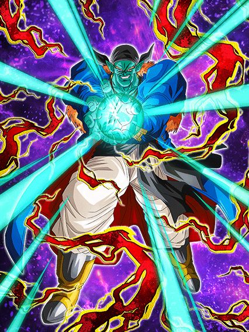

Pra alguns uma celebração interessante, e pra outros só mais dragon stone pra pegar
Essa foi a celebração de ano novo no jp, e no geral uma boa celebração mas com uma estranha demora no conteúdo.. as coisa demoram pra vir
Card feio, mas muito forte.
Esse cara tem infelizmente as top animações mais estranhas, principalmente na standby q comentarei mais tarde
Bom, ele é um card que desvia e dá bastante dano, e se resume a basicamente isso
Uma regra usando ele é sempre colocar ele no slot 2 ou 3, pq nesses slots ele tem 70% de chance de desvio e obviamente pode dar super antes de ser atacado, oq ajuda na defesa dele que eeeehhhhh não é perfeita
Essa regra é bem importante pq no slot 1 os 70% dele caem pra 50% e é horrivelmente perigoso, não faça isso.
Ele também tem 50% de chance de critar no slot 2 ou 3, além de dar crítico garantido e mais dano se seu HP tiver abaixo de 59%
E pra finalizar, ele tem 70% de chance de nulificar super attacks desarmados, que é quase inútil sempre, mas tá ali né
Acho que deu pra notar que o goku não é um card muito interessante, e realmente, é isso
Ele dá bastante dano e tem o desvio, não stacka, não faz nada de muito especial, só.
Bom, ele tem uma standby que tem condições decentes até, a partir do turno 3 se estiver abaixo de 70% de HP ou a partir do turno 6, bem tranquilo de pegar
Como deixaram ESSE card sem uma tela de K.O?
Eu gosto de me referir a essa standby como "Anti super instantâneo slot 1", já que esse é o exato propósito dela
O goku se torna um card desvia ou morre meio perigoso, já que ele não pode dar super attacks e a defesa q ele ganha na passiva é horrível
O bom é que ele tem 70% de chance de desviar e se estiver abaixo de 59% de HP isso aumenta pra 90% que é obviamente muito forte
Mas aí tá uma grande estratégia pro dragon fist:
Como essa standby é feita pra counterar supers, o goku ganha um scouter incondicional, e se vc quiser uma partida totalmente desbalanceada, cê pode usar a standby, ver aonde o boss vai dar super, e se for num lugar safe ou ele simplesmente não dar super, você pode fechar o jogo e abrir de novo
Isso vai resetar o turno, então o goku vai estar fora da standby e vc pode usar ela outra vez no turno seguinte, e ficar nisso eternamente sem se preocupar com supers aleatórios de surpresa
Mas, se for usar do jeito certo né.. o goku vai automaticamente counterar o super do boss garantido e dar um dano absurdo, além de ficar com desvio garantido pro resto do turno, que é bem forte se for um super instantâneo no começo
Ele ainda completa com OSTs lindas e dá um suporte de 59% de DEF pra todo mundo enquanto estiver na standby, que é bem útil
Em geral a grande mecânica desse goku é essa standby, o problema é que apesar de ele ser um card forte e ter mecânicas boas, ele sofre de animações feias (é inadmissível não ter uma tela de K.O pra finalização da standby), e também de outro problema..
O goku é facilmente substituível no time pelo futuro EZA do Vegetto STR, que tem scouter por 10 turnos e tals, no geral é um card melhor q esse goku, então eh, ele é bom sim, mas tem problemas consideráveis..

Pergunta matemática: Quantos stacks são necessários pra salvar a classe extreme?
Slk, tá aí o nosso raro buff extreme bem forte, mas que sofre assim como todos os outros: Times e parceiros de link em falta
Pra começar esse cara tem uma intro bem simples que dá pra ele stats extras e 50% de chance de critar por 5 turnos, bem decente
Bom, o hirudegarn é um card bem diferente, já que ele tem o potencial de não ser um card "Desvia ou morre", e sim um raro card "Desvia ou sobrevive", já que ele é um dos poucos personagens com desvio alto que stacka DEF, que obviamente ajuda se o desvio q ele tem falhar
Desvio esse sendo 70%, sem condição nenhuma e ele ainda lança um adicional com 70% de chance de ser super depois de desviar 1 vez, que é bem forte
Ele também builda um pouquinho de defesa a mais desviando, que é legal, mas meio simples
Já deu pra notar que o hirudegarn e o goku ssj3 tem bastante similaridades, já que as formas base deles são só fortes e acabou, pelo menos o hirudegarn tem formas de se proteger se não rolarem os desvíos
E sim, eu sei que ninguém vai stackar até ele ter 1 milhão de DEF e aí transformar, mas é melhor levar um ataque básico com 600k de DEF doq com 200k né?
Bom, a condição de transformação dele é a exata mesma que a standby do goku ssj3, abaixo de 70% de HP no turno 3 ou a qualquer hora a partir do turno 6, que convenientemente é quando a intro dele acaba, muito astutos os devs.
")
Agora jogue ele no slot 1.
É nesse momento que o mano hirudegarn mostra seu valor, já que ele começa com uma OST simplesmente LINDA de transformação
E dá pra fácilmente dizer que ele é o melhor card de desvio do jogo, é incomparável
Esse cara não stacka mais, só que agora ele mantém o desvio q ele tinha antes, e cada desvio no turno aumenta em 10% uma chance separada de desviar, ou seja, se vc desviar de 7 ataques, vc tem 2 chances diferentes de 70%, se não desviar nem assim é complicado ein amigo
E como se não fosse suficiente, toda vez que o hirudegarn desviar 3 vezes no turno, ele automáticamente vai desviar garantido de tudo no turno seguinte, e isso é MUITO forte, ele é praticamente o único card que pode fazer isso
Uma coisa importante é que no slot 1 ele ganha 100% de ATK e DEF a mais e 50% de chance de crítico, vale a pena tentar colocar ele no slot 1 pq né, mucho desvio
Isso pq eu ainda não falei q ele pode lançar 4 supers no turno, todos com esse crítico, e ainda desviando garantido, n tem como não mano
Os únicos problemas do hirudegarn são o desvio te zuar no começo da partida e obviamente o time dele que é inexistente, mais fácil usar ele no time do Zamasu LR..

Card bonito, arte linda, mas uhh...
Eu gosto muito desse card, ele é muito maneiro e essa roupa do goku precisa de mais atenção nos jogos, mas slk, esse card aqui precisava de mais..
Com o awakening e eza dele, agora ele tem uma intro bem simples, mas que é boa
E sobre o kit dele, ele é um bom suporte pra Bond of Parent and Child e cura bastante vida, já que ele cura na passiva, cura no super attack, e assim vai indo
A parte ruim desse cara é ele ter defesa ativa caso esteja abaixo de 60% de HP, o que normalmente seria bom, se Super Saiyans não fosse uma categoria que tá sempre com muita vida, já que o Vegeta do saiyan day precisa de bastante vida, o futuro EZA do Vegetto STR vai curar a vida inteira, e etc
Usar esse goku em Super Saiyans é meio perigoso, vai ser meio raro ele estar na condição pra ter a defesa ativa, e enquanto o bonde do pai e filho não ganhar outro líder, o time vai ficar parado
E caso o goku tenha a defesa ativa, ele é bem fortinho sim, já que ele ainda ganha 30% de redução de dano e aumenta o ATK um pouco se tiver outro Goku's Family no turno.. que bom que terá um personagem Goku's Family um pouquinho forte logo logo no global
No geral ele é um card bom mas que no momento vai ser segurado pelos times, uma pena q o awakening e eza dele foram as únicas coisas que tivemos no primeiro de abril desse ano..

Eu não sou fã do kit desse cara.
O tapion é um suporte pra Movie Heroes com desvio, quais as chances de isso dar certo?
Bom, ele tem uma leve similaridade ao Goku Black PHY desse ano, onde ele é completamente esfomeado por orbs rainbow
A parte boa é que o tapion é um rainbow orb changer, ou seja, melhor que o goku bl-
Ele ganha 30% de chance de desviar e ainda aumenta a chance de crítico de todos aliados em 20% com apenas 1 rainbow orb, que é uma habilidade forte até
E aí tem o seguinte, ele ganha +10% de chance de desviar por rainbow orb seguinte pega, ou seja, se vc pegar 5 orbs no turno (que é o máximo possível), ele tem 70% de chance de desvio, que obviamente é forte, mas é quase impossível fazer isso de forma constante, e tá aí o problema
Sua chance de desviar fica meio aleatória, e o tapion precisa desse desvio pra ser bom, então ele é bem RNG nas partidas, já que vc precisa contar com o orb change, e também com a chance de desviar né
Repito, não gosto desse kit, mas ele não é relativamente ruim.
")
Quando os devs perceberem que cards que precisam de outros personagens tem q linkar bem, vai ser tarde demais.
Esse Trunks é um caso triste de potencial desperdiçado, pq ele tem muita coisa forte no kit e se ele tivesse só um pouquinho mais.. seria um personagem muito decente
Esse cara: Stacka ATK, tem crítico garantido, é um suporte de 40% de ATK e DEF e debuffa o inimigo
Tipo, sabe? Isso é muita coisa boa pra um card F2P mas ele é infelizmente segurado pelos stats ruins e condições horríveis
O suporte e debuffs dele só ativam se tiver um inimigo Movie Bosses, ou um Tapion no turno, que também ativa o Unit Super Attack dele que, caso tenha um Tapion no turno, dá crítico garantido
Já deu pra perceber o problema né, esse cara quer muito um Tapion no turno pra ajudar ele, mas eles obviamente não linkam bem, então praq todo esse esforço? 💀
Pra mim, se esse cara tivesse um pouquinho mais de stats e uma chance de desvio, ele seria um F2P muito melhor.. mas a gente só pode sonhar né
Meu Deus, são muitos deles.
Todos os suportes de tipo tem a passiva extremamente idêntica, então eu irei comentar sobre isso primeiro e depois falo de cada duplinha
Esses EZAs deixaram esses caras muito absurdos, já que agora o suporte deles que era de 50% de ATK e DEF aumentou pra 60%, isso é muito suporte slk
Bom, tem uma dupla pra cada cor do dokkan, ou seja, um personagem INT extreme e um INT super, e assim vai a sequência
Cada um dos cards:
Ok, vamo começar então né
")
Eles são bem paralelos.
Enquanto o Vegeta é um card bem desnecessário já que extreme INT tem 800 trilhões de cards já, o Gohan é uma boa ajuda pra cards tipo o Vegeta e Trunks, além de ganhar 50% de ATK e DEF por 9 turnos no super attack, é praticamente um stack permanente então ele pode ficar bem forte.
Cards de SBR.
Esses caras só tem debuffs no super attack, e o Cell até é uma boa ajuda pra extreme TEQ mas não vai muito além disso..
Pra mim os melhores.
Não só eles são buffs pra Kale, que é sempre muito bom, mas eles também tem efeitos muito fortes no super attack
O hit stacka 50% de DEF, que é muito bom, e o kyabe tem o mesmo efeito de super do gohan int, 50% de ATK e DEF por 9 turnos
Por sinal o kyabe buffa a Kefla STR.. preciso nem dizer nada né?
A pan é incrível e eu não falo do rildo.
A pan pra mim é a segunda melhor card desses personagens (eu considero o kyabe STR o melhor), já que o efeito no super attack dela é 30% de ATK e DEF pra todos os aliados por 2 turnos, então é, ela tem um semi-suporte da Bulma LR em mãos, personagem muito forte
E o rildo é um buff pra GT BOSSES KKKKKKKKKKKKKKKKKKKKKK
Sem comentários.
O buu é interessante.
O gohan é bem básico mas eu não sei se consideraria ele útil já que PHY tem muito orb changer já, mas ele pode ajudar o fraudehan pelo menos
E o buu não é só útil pelo suporte, mas tmb pq ele cura 20% de HP no super attack, isso é bem interessante ein
Foram todos? É isso então.

Sabe, existe o termo "canhão de vidro", que se refere a personagens que tem pouca defesa mas dão bastante dano
Bom, eu diria que esse goku é uma bomba termonuclear de vidro.
Esse goku era o LR mais antigo de todos sem um EZA, e eu devo dizer q ele ficou muito forte
Eles tentaram ao máximo fazer esse goku um card que segue a lore do filme, já que o ultra super attack dele é pra ser usado como golpe final pra de fato garantir a vitória numa luta (até pq depois disso cê se lasca um pouquinho..)
O goku tem 50% de redução de dano, e caso ele dê um ultra super attack, ele perde a redução naquele turno, tornando ele extremamente frágil contra qualquer coisa
É meio engraçado, mas esse cara tem problemas de Ki igualzinho o fraudehan, mas aqui tem motivo pra isso, já que o objetivo é evitar ao máximo usar o punho do dragão e guardar pra fase final da luta
E acredite, o punho do dragão dá MUITO dano, é sério
Esse cara vai estar mandando supers de 12 milhões no turno 1, sendo q vc tem q se preparar pra usar o punho do dragão depois
E dá pra se preparar muito bem até lá, já que esse cara stacka 50% de ATK no super attack normal e ainda builda mais 59% com 3 supers (e não, o super attack normal não remove a redução de dano)
Ele também dá crítico garantido e mais dano se estiver enfrentando um inimigo e seu HP estiver abaixo de 59% no turno 6.. eu nem preciso dizer q isso é horrível né
Enfim, ele é um card muito forte se as probabilidades estiverem contigo, já que se vc stackar muito, o dano do punho do dragão vai ser uma parada extremamente insana
Ele é frágil? Um pouco
Mas ele compensa tudo no dano slk
O cara q fez o EZA da Kefla STR voltou amigos, podem aplaudir nosso salvador.
Cara, que hype ein, esse EZA só iria vir bem depois mas adiantaram ele pro global, eu tava hypado demais pra usar ele no time do Vegeta TEQ
Enfim, o gotenks na forma base é um "desvia ou morre" perigoso, já que ele não tem muita defesa antes de atacar e só tem 50% de chance de desvio, oq é obviamente decente mas nehhh..
Enfim, o gotenks até consegue tankar depois de dar super, mas isso não importa muito pq ele tem transformação automática e no turno seguinte ele já se transforma em ssj
É essa forma q vc vai ver dele na maioria das vezes.
Bom, além do óbvio "aumentar os valores q ele tinha na forma base", o gotenks ganha buffs a mais, incluindo 70% de chance de stunar no super attack, que pode parecer inútil mas é bem útil até
E agora eu vou aproveitar pra falar do desvio do gotenks, então vamo lá
Em ssj o gotenks continua tendo 50% de chance de desviar, mas ele tem um extra, que são 20% de chance de desvio depois de desviar 1 vez, e vc deve estar pensando que com isso ele ganha 70% de chance de desvio, bom, isso tá errado
Na verdade o 50% continua sendo 50%, os 20% são uma chance separada de desvio, e apesar de parecer meio horrível, isso é até que bem forte, já que agora o gotenks tem 3 possibilidades de desviar de qualquer ataque (o desvio que ele tem base, esses 20% extras e o desvio do hidden potential, todos são chances calculadas separadamente), então a chance de ele desviar de algo querendo ou não aumenta, mas não do jeito que muitos acham.
Ok, sobre a transformação do gotenks, eu vou ser bem honesto: é uma condição horrível
Você tem q estar com mais de 70% de HP e estar no quarto turno do gotenks depois de transformar
Oq isso significa?
Você só pode se transformar em ssj3 quando passarem 4 turnos depois q ele virou ssj
O mais cedo q vc vai ter o gotenks ssj vai ser no turno 3, oq significa que ele só pode virar ssj3 no turno 7, então é, bem chatão
Uma estratégia que é bem funcional é deixar o gotenks de floater quando ele virar ssj, aí quando ele voltar a transformação já vai estar disponível
Enfim, se vc chegar nas condições, então libere o deus>
O shinigami da justiça é real.
Chegando a esse ponto o gotenks vira uma lenda, já que agora o dano e defesa dele são muito altos e fica uma coisa absurda demais
O super attack dele aumenta 50% de ATK e DEF por 4 turnos, ou seja, no primeiro turno dele ele nem tá no potencial máximo ainda, e slk, ele já é forte demais
E agora a chance de desvio dele aumentou pra 70%, o que já é desbalanceado já que ele vai estar na casa dos 800k a 900k de defesa
Além disso ele lança um super adicional garantido pra sempre, buffando ainda mais os stats dele por múltiplos turnos, e dá crítico garantido no primeiro turno da transformação, que é obviamente muito forte já q ele dá um dano do caramba (por sinal a chance de crítico fica em 50% depois desse turno, então segue sendo braba)
E é basicamente isso, o gotenks vai de um card "desvia ou morre" pra "não me importo se eu não desviar"
E hora do julgamento: Ele é melhor q a Kefla? Não.
Mas ele é o TUR com EZA n.2 do jogo, então tá mais que ótimo
Ele tem habilidades muito fortes e muito úteis em batalha, e a única coisa q segura muito ele é a demora pra se transformar, já que isso atrasa demais ele a chegar no poder total
Mas em geral, amo esse cara, obrigado global por trazerem ele adiantado.

Mais um?
... mais um.
Ok, ok, tudo bem, felizmente os cards tão um pouco melhores aqui..
O majunior é um bom card de world tournament, já que ele tem 30% de chance de stunar todos os inimigos, além de ganhar mais buffs de acordo com o número de inimigos, então ehhh.. ele é alguma coisa
Ele também tem uma forma gigante que tá ali né, 10% de chance de ativar.. wow..
O goku descalço é interessante, ele tem buffs decentes e se tiver enfrentando um inimigo extreme ele tem defesa ativa, um card bem usável não ironicamente, bem aceitável
Antes de falar do goku ssj, vou aproveitar pra dizer q a arte dele é linda e eu amo esse breve momento do goku ssj com essa roupa
E sobre ele em si, ele é infelizmente um orb changer zuado, já que ele só muda orbs AGL pra STR se tiverem outros 2 Super Heroes ou Super Saiyans no time, e não é ruim, mas o problema é que ele também precisa desses orbs
Com 3 orbs STR ele tem 50% de chance de selar o inimigo e também 50% de chance de critar, e com 4 orbs ele lança um adicional com 70% de chance de ser super
Em geral, card bonito, mas restrito e mesmo que seja fácil, não o torna um card insano
")
Eles conseguiram.. fizeram um EZA de world tournament bom.
Esse gohan é muito brabo e um suporte incrível em um time full Super Saiyans ou Movie Heroes, já que nesses 2 times ele tem 70% de chance de desvio, e ainda dá 30% de ATK e DEF pra todos super class, muito forte
Além disso ele stacka ATK e DEF no super attack.. é útil? Não, ele continua sendo um card desvia ou morre
Mas se vc stackar bastante, vai que ele tanka 1 ataque básico né..

Ok né.
Esse cara não é um EZA nem nada, mas ele ganhou um awakening decente então pq não comentar sobre?
Ele é bem interessante num time extreme Space-Travelling Warriors, já que se estiver no time completo ele tem 210% de ATK e DEF, dá suporte de 30% de ATK, tem 70% de chance de critar e ainda tem defesa ativa, bem forte
Parece bastante coisa mas por ele ser um card de world tournament, os stats dele são horrivelmente baixos, e por hora não tem um time bom pra usar ele, mas ele tem uma base bem forte, então achei brabo
Você chegou ao fim dessa página!
Obrigado por ler tudo, e fica a vontade pra ver outras